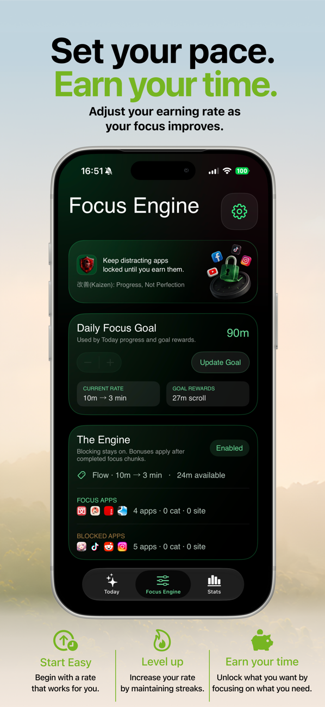

Quick answer: "Earning screen time" means your distracting apps stay blocked until time spent on productive apps unlocks them — e.g., 10 minutes of studying earns 3 minutes of scrolling. Instead of relying on willpower to resist a free temptation, the system reprices the temptation. FocusFirst is built entirely around this mechanic on iPhone.
The problem with pure restriction
Every restriction-only tool — App Limits, hard blockers, grayscale mode, the drawer you put your phone in — shares one failure mode: the urge has nowhere to go. You've subtracted the behavior without adding one. The result is a standoff between you and the urge, and the urge is patient. This is why blocking apps feels great for four days and then collapses in one bad evening.
Behavior research has been clear on this for decades: habit replacement outperforms habit suppression. You don't end a loop; you reroute it.
How earning screen time reroutes the loop
In FocusFirst, the loop looks like this:
- The cue fires — boredom, a hard task, 10:30pm — and your thumb goes to Instagram.
- The shield answers instead. Not a lecture: a balance. "You've earned 43m. Spend 5m to unlock now?"
- If you have time banked, you can spend it — genuinely guilt-free, because you paid for it with an hour of focus. Scrolling stops being a lapse and becomes a wage.
- If you haven't earned time, the fastest route to the feed is… doing the thing you were avoiding. Twenty minutes of the problem set buys the break. The urge to escape becomes fuel for the work.
That last step is the quiet genius of the model: it doesn't fight your desire to scroll — it hires it.
Why it feels different (and why that matters)
Restriction apps make your phone feel like a parole officer. An earning system makes it feel like a fair game you're winning:
- No guilt on either side. Focus time is progress; earned scroll time is a paycheck. There's no failure state in the loop at all.
- You set the exchange rate. Strict during exam season (10m → 2m), relaxed on holiday. The dial is yours — FocusFirst calls this the Focus Engine, and adjusting it as your focus improves is the intended path.
- Streaks help without hurting. Consistency builds multipliers that boost your earning rate. A missed day just means no bonus — not a red broken-streak scolding.
- The stats tell a story you want to read. Focused hours per week, best day, earned scroll used — a record of what you built, not a shame ledger of what you wasted.
Who this model fits best
Earned screen time works best for people with something to point the focus at: students, language learners, readers, anyone building something on the side. If your goal is purely "less phone" with no replacement activity, start with our screen time reduction guide — but most people discover the replacement activity was the thing they'd been putting off all along.

Try it: FocusFirst requires a subscription or one-time Lifetime purchase — block your distracting apps, set your earning rate, and start your first focus session today. Get FocusFirst for iPhone →